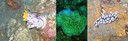
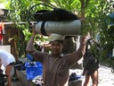
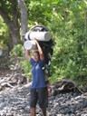

Resor · 2010-10-10 @ 15:21:38 Allmänt Permalink
Kväve i kroppen äntligen
Många ser ut som Morpheus… Små barn, sitter där vid gatkanten med fyrkantiga stora ansikten, halvslutna ögon och glugg mellan tänderna och mumlar "You are the One…", lite läskigt.
Jomenvisst, jag blev hämtad vid flygplatsen $10 av en glad typ. Jag frågade var ATM maskinen var och han pekade glatt, han skulle vänta på nån mer så jag knallade ditåt utan att hitta någon ATM. Frågar nån annan…, som tycker jag ska följa med i hans taxi, en tredje pekar åt ett tredje håll. Jag har en del packning och det är fullt med folk, lätt kaos av nyanlända turister och kundraggare, men va f-n…. Min kille! Frågar igen och han pekar åt ett annat håll. Mer strukturerat börjar jag ställa kontrafrågor, som är den åt höger? Är den åt vänster? Och inser att han inte fattar ett ord utan svarar "Yes" på allt!
Hjälpsamhet som gått för långt.
Trafiken.. ja ni vet hur den är, som på så många ställen. principiellt är det vänstertrafik, men alla kör överallt. Kör om på alla sidor, kör om fast de har möte. Lusten att hyra moppe klingar av. Jag tänker inte heller vara rädd och bry mig längre utan lägger min färd i förarens händer.
Framme vid dykcentret flyter det fint, vi hankar oss fram till att jag ska ha ett rum och så. Men då reser sig ett pyre upp som tittat på TV, en tvärhand hög. Ett indonesiskt flickebarn. Och säger på strålande engelska "Kan jag hjälpa dig med något" och styr upp när och hur dykningen sker i morgon och annan logistik, undrar hon nåt frågar hon männen på indonesiska.
Upp med gejjerna på rummet, fläkt. Samma lukt som i Thailand av starkt rengöringsmedel, så där så det tåras lite. Strot rum, det här är ok! Duschar kallt (inget varmvatten) i mitt $30/natts rum. Och går på en promenad. Det är inget vidare intryck i mörkret. Eländigt. Varför är det så mycket reklam i länder som har så lite pengar?? gatan full!
Jag frågar flickan hur det kommer sig att kan så bra engelska, hon svarar.... "What is the Matrix?"
Nej… hon svarar "My mom owns this place" Aha! Då kan du danska också frågar jag på svenska "Jaa!" :-)
---
Sov gott, frös till och med lite!
Väckning 6 typ, bra frukost, sval skön morgon. Hoppar in i bilar och åååååååååååker i 2 timmar till Tulamben. Det är ju bara att hänga på. 20 tal dykare i olika grupper och jag tar rygg på "min" 'Amin'. Han, eller alla! Är professionella och trevliga, verkligen. Flest lokala DM och instruktörer.
På bilresan försöker jag fatta varför det finns så mycket kunskap om hur man ventilerar. Ett klassrum med 30+ individer, eller en bio, kan byta luft utan störande ljud och utan obehagliga luftströmmar som träffar oss, för det blir man sjuk av.
Men bilar, där har vi ett par hål där fram som lägger värsta jetstrålen av iskall luft mot passagerarna. Kan man inte ha ett system som låter luften sippra ut ur alla delar, där alla balkar inne i cupén är perforerade så det bara är rätt temperatur, punkt slut, inga strålar att rikta!?
Då kommer vår utrustning... Buren av taniga kvinnor på 1.50, på huvudet, i flip flopp, utan tvekan till obalans. Och när man fått sig den törnen, att de bär mitt paket på huvudet där jag knappt kan gå. Kommer hennes kompis med två stycken på en gång.
http://www.youtube.com/watch?v=g7NaZ73dBaQ
Fick jag pencillin, nej. Det finns inte. Kanske i morrn, för 900:-. Nej försäkring för symptomen fanns i sverige.
Och Internet kostar $10
Åt en jättefin Nasi Goreng för 30kr, nu på rummet tog jag en alcoläsk ur kylskåpet för samma pris. Halva min matkostnad är sprit!!
Vart ska jag i övermorgon?? Ingen aning. (Cliffhanger!)
Jomenvisst, jag blev hämtad vid flygplatsen $10 av en glad typ. Jag frågade var ATM maskinen var och han pekade glatt, han skulle vänta på nån mer så jag knallade ditåt utan att hitta någon ATM. Frågar nån annan…, som tycker jag ska följa med i hans taxi, en tredje pekar åt ett tredje håll. Jag har en del packning och det är fullt med folk, lätt kaos av nyanlända turister och kundraggare, men va f-n…. Min kille! Frågar igen och han pekar åt ett annat håll. Mer strukturerat börjar jag ställa kontrafrågor, som är den åt höger? Är den åt vänster? Och inser att han inte fattar ett ord utan svarar "Yes" på allt!
Hjälpsamhet som gått för långt.
Trafiken.. ja ni vet hur den är, som på så många ställen. principiellt är det vänstertrafik, men alla kör överallt. Kör om på alla sidor, kör om fast de har möte. Lusten att hyra moppe klingar av. Jag tänker inte heller vara rädd och bry mig längre utan lägger min färd i förarens händer.
Framme vid dykcentret flyter det fint, vi hankar oss fram till att jag ska ha ett rum och så. Men då reser sig ett pyre upp som tittat på TV, en tvärhand hög. Ett indonesiskt flickebarn. Och säger på strålande engelska "Kan jag hjälpa dig med något" och styr upp när och hur dykningen sker i morgon och annan logistik, undrar hon nåt frågar hon männen på indonesiska.
Upp med gejjerna på rummet, fläkt. Samma lukt som i Thailand av starkt rengöringsmedel, så där så det tåras lite. Strot rum, det här är ok! Duschar kallt (inget varmvatten) i mitt $30/natts rum. Och går på en promenad. Det är inget vidare intryck i mörkret. Eländigt. Varför är det så mycket reklam i länder som har så lite pengar?? gatan full!
Jag frågar flickan hur det kommer sig att kan så bra engelska, hon svarar.... "What is the Matrix?"
Nej… hon svarar "My mom owns this place" Aha! Då kan du danska också frågar jag på svenska "Jaa!" :-)
---
Sov gott, frös till och med lite!
Väckning 6 typ, bra frukost, sval skön morgon. Hoppar in i bilar och åååååååååååker i 2 timmar till Tulamben. Det är ju bara att hänga på. 20 tal dykare i olika grupper och jag tar rygg på "min" 'Amin'. Han, eller alla! Är professionella och trevliga, verkligen. Flest lokala DM och instruktörer.
På bilresan försöker jag fatta varför det finns så mycket kunskap om hur man ventilerar. Ett klassrum med 30+ individer, eller en bio, kan byta luft utan störande ljud och utan obehagliga luftströmmar som träffar oss, för det blir man sjuk av.


Men bilar, där har vi ett par hål där fram som lägger värsta jetstrålen av iskall luft mot passagerarna. Kan man inte ha ett system som låter luften sippra ut ur alla delar, där alla balkar inne i cupén är perforerade så det bara är rätt temperatur, punkt slut, inga strålar att rikta!?


Två dyk, USS Liberty ..inte ens en skrothög utan mer en hög skrot. Famous? Lika spännande som svartfotsvraket, nej mindre, om nån får vatten i masken (internt). På väg ner till stranden på de knöliga stenarna som är jobbiga att gå på, slipper vi bära paketen tack o lov. Det ska personalen göra. Vi mödar oss fram i våtdräktsskor på stenarna och håller på att ramla.Då kommer vår utrustning... Buren av taniga kvinnor på 1.50, på huvudet, i flip flopp, utan tvekan till obalans. Och när man fått sig den törnen, att de bär mitt paket på huvudet där jag knappt kan gå. Kommer hennes kompis med två stycken på en gång.


Men en sjutusan till Barracuda och en del små söta firrar. Jag gillar ju puffer fish! Se klippet:http://www.youtube.com/watch?v=g7NaZ73dBaQ
Fick jag pencillin, nej. Det finns inte. Kanske i morrn, för 900:-. Nej försäkring för symptomen fanns i sverige.
Och Internet kostar $10
Åt en jättefin Nasi Goreng för 30kr, nu på rummet tog jag en alcoläsk ur kylskåpet för samma pris. Halva min matkostnad är sprit!!
Vart ska jag i övermorgon?? Ingen aning. (Cliffhanger!)